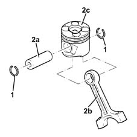
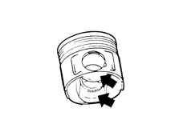
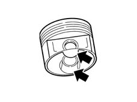
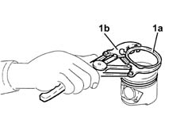
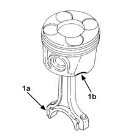

1028H60 piston, pin set - replace
- Path
- Procedures > 10 ENGINE > 1028 PISTONS AND CONNECTING RODS > 1028H pistons and connecting rods > 1028H60 piston, pin set - replace
- Kind
- repair procedure (removal / refitting; the operation number is the code)
- Applies to
- all engines; all production periods
- Interactive page
- https://sloeber94.github.io/elrnDB-lYpsln/en/#/2429757
Applies to: engines: 1.2 8v; all production periods
 Dismantling
Dismantling
 Reassembling
ReassemblingApplies to: engines: 1.2 16v; all production periods
Dismantling
ReassemblingApplies to: engines: 1.4 16v; all production periods
Dismantling
ReassemblingApplies to: engines: 1.3 JTD; all production periods
Dismantling
Reassembling1. Remove the circlips.
2. Remove the pin (2a) and separate the connecting rod (2b) from the pistons (2c).

Applies to: engines: 1.2 8v; all production periods
Reassembling
DismantlingClean the carbon residues from the piston crown.
Check that the difference in weight between the pistons is within the recommended values.
Slight maching in the inner areas of the piston is permissible to equalize the weight.
 | Measurement | Value | |
|---|---|---|---|
1 | Piston weight difference (g.) | +- 5 |
Check the connecting rod alignment using a sample pin.
If the connecting rod is out of alignment, replace it.
Applies to: engines: 1.2 16v; all production periods
Reassembling
DismantlingClean the carbon residues from the piston crown.
Check that the difference in weight between the pistons is within the recommended values.
Slight maching in the areas shown in the diagram is permissible to equalize the weight.
| Measurement | Value | |
|---|---|---|---|
1 | Piston weight difference (g.) | +- 5 |

Applies to: engines: 1.4 16v; all production periods
Reassembling
DismantlingClean the carbon residues from the piston crown.
Check that the difference in weight between the pistons is within the recommended values.
Slight maching in the areas shown in the diagram is permissible to equalize the weight.
| Measurement | Value | |
|---|---|---|---|
- | Piston weight difference (g) | ± 5 |

Applies to: engines: 1.3 JTD; all production periods
1. Remove the piston rings (1a) from the pistons using a suitable tool (1b).

Applies to: engines: 1.2 16v; all production periods
Check the connecting rod alignment using a sample pin.
If the connecting rod is out of alignment, replace it.
Applies to: engines: 1.4 16v; all production periods
Check the connecting rod alignment using a sample pin.
If the connecting rod is out of alignment, replace it.
Applies to: engines: 1.3 JTD; all production periods
Reassembling
DismantlingCheck the alignment of the connecting rods using a suitable tool; if the connecting rod is not perfectly aligned, replace it.
Check that the difference in weight between the pistons is within the recommended values.
| Measurement | Value | |
|---|---|---|---|
- | Difference in weight between the pistons (g) | ± 8 |
Check that the difference in weight between the connecting rods, complete with bearing shells, caps and bolts, is within the recommended values.
| Measurement | Value | |
|---|---|---|---|
- | Connecting rod weight difference (g) | ± |
Fit the piston rings on the pistons using a suitable tool.
1. Join the connecting rods to the pistons so that the number stamped on the big end (1a) is facing the reference (1b) on the piston skirt where the oil jet is housed.
Fit the pins and secure them using the circlips.
